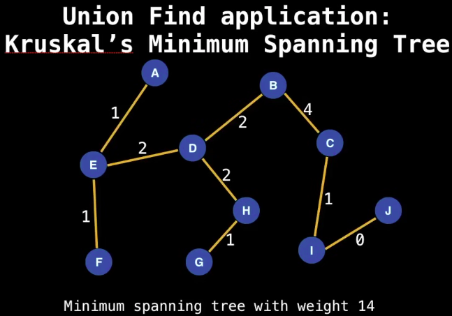
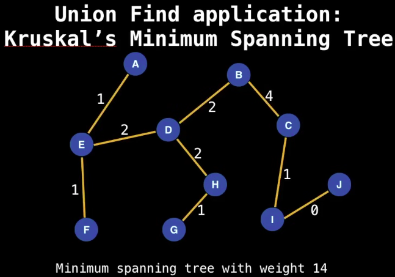
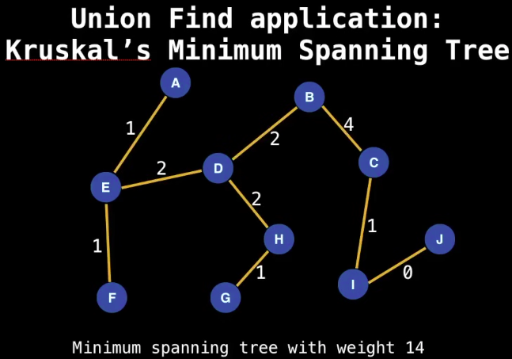

Data Structure
Use cases:
Kruskal's minimum spanning tree algorithm
Grid Precolation
Network Connectivity
Least common ancestor in trees.
Image processing
Kruskal's minimum spanning tree algorithm:

KRUSKAL(graph):
1. MST = [] # Initialize an empty MST
2. Sort all edges by weight
3. Initialize a Disjoint-Set for all vertices
4. For each edge (u, v) in sorted edge list:
a. If u and v belong to different sets:
i. Add edge (u, v) to MST
ii. Union(u, v) in the Disjoint-Set
b. If u and v are in the same set, skip edge
5. Return MST
Example:
Graph Input:
Steps:
Sort edges by weight:
Initialize Disjoint-Set:
Process edges:
Output:
Implementation:
Time Complexity:
| Operation | T.C. | Note |
|---|---|---|
| Construction | Create new UnionFind DS | |
| Union | Merge two sets | |
| Find | Find the given element | |
| Get Component Size | List of element in a set | |
| Check if connected | True if two elements have same root node | |
| Count Components | Number of sets available |
Note: --> Amortized constatnt time, almost constatnt time although not contant time.
Operations:
Implementation: Github.com UnionFind.java
/**
* UnionFind / Disjoint Set data-structure implementation.
*/
public class UnionFind {
// The number of elements in the UnionFind.
private int size;
// Used to track the size of each of the component.
private int[] compSize;
/*
* id[i] points to the parent of i,
* if df[i] = i then i is the root node.
*/
private int[] id;
// Tracks the number of components in the UnionFind
private int numComponents;
/**
* Initializes UnionFind DS with given size.
*
* @param size
*/
public UnionFind(int size) {
if (size <= 0) throw new IllegalArgumentException("size <= 0 not allowed.");
this.size = this.numComponents = size;
compSize = new int[size];
id = new int[size];
for (int i = 0; i < size; i++) {
id[i] = i; // Link to itself (self node)
compSize[i] = 1; // Each component is originally of size 1
}
}
/**
* Find which component/set 'p' belongs to, takes amortized constant time.
*
* @param p
* @return
*/
public int find(int p) {
int root = p;
// find root node of the component/set
while (root != id[root]) {
root = id[root];
}
/*
* Compress the path leading back to the root node.
* This operation is called 'Path compression'
* and this is how 'amortized time complexity' is achieved.
*/
while (p != root) {
int next = id[p];
id[p] = root;
p = next;
}
return root;
}
/**
* Returns true if 'p' and 'q' are part of same component / set,
* that is they have same root node.
*
* @param p
* @param q
* @return
*/
public boolean connected(int p, int q) {
return find(p) == find(q);
}
/**
* Returns the size of the component/set 'p' belongs to.
* Note: Root nodes will be having the size of component/size.
*
* @return
*/
public int componentSize(int p) {
return compSize[find(p)];
}
/**
* Returns the number of elements in this UnionFind/Disjoint Set.
*
* @return
*/
public int size() {
return size;
}
/**
* Returns the number of remaining components/sets.
*
* @return
*/
public int components() {
return numComponents;
}
/**
* Merge two disjoint set/components together.
*
* @param p
* @param q
*/
public void unify(int p, int q) {
int root1 = find(p);
int root2 = find(q);
// The elements are already in same group.
if (root1 == root2) {
return;
}
/*
* Merge two components / sets together
* Approach:
* --> Merge smaller set into the larger one by checking the component size of set.
*/
if (compSize[root1] < compSize[root2]) {
compSize[root2] += compSize[root1];
// root2 is parent of root1
id[root1] = root2;
} else {
compSize[root1] += compSize[root2];
id[root2] = root1;
}
// reduce components/set count as we are merging two sets.
numComponents--;
}
}
References: